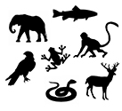
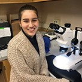
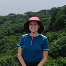
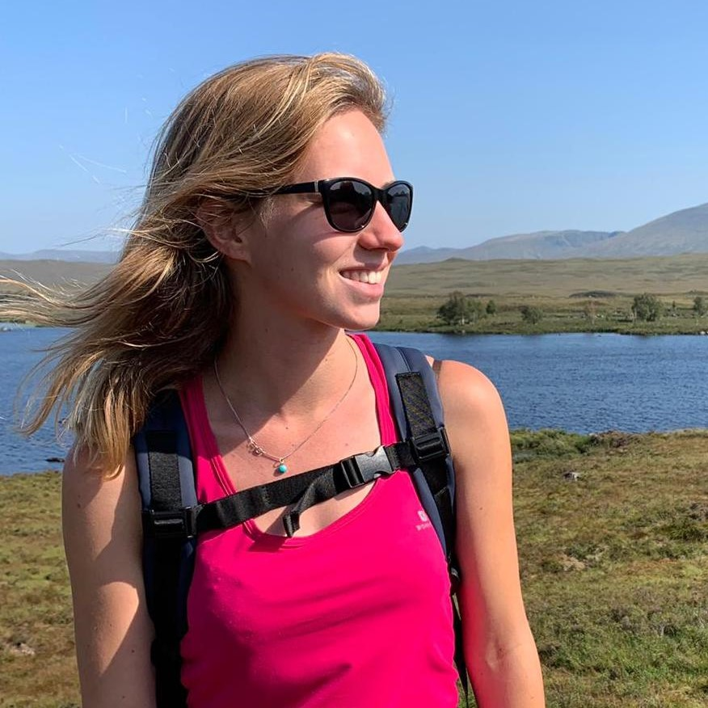

Current Members

| Andrew Sellers, PhD Student
[e-mail: andrew.sellers@mail.mcgill.ca]
Temporal Fluxes in Nutrient Subsidy Supply: Effects of Seasonal Upwelling on Algal-Herbivore Interactions |
| Seemingly discrete ecosystems are often connected by spatial flows of materials and organisms that represent important resource subsidies for species in recipient systems, and may strongly influence community structure and trophic interactions. Early studies in tropical rocky intertidal habitats highlighted the role of top-down processes and local scale interactions in regulating community structure and dynamics, but ignored the potential influence of large scale oceanographic processes that deliver nutrient rich water to coastal ecosystems (i.e. marine upwelling). For my dissertation I will examine how nutrient subsidies from tropical upwelling events influence producer-herbivore interactions in rocky intertidal communities in the Pacific coast of Panama. The Pacific coast of Panama is divided into two broad regions: the upwelling Gulf of Panama in the east, and the non-upwelling Gulf of Chiriqui in the west. Such variation in exposure to seasonal upwelling events represents an ideal setting to examine how large scale oceanographic processes influence intertidal community structure and algal-herbivore interactions in the tropics. My research will shed new light on the processes that shape community structure and influence trophic interactions on tropical coasts. |
| |
|

| Dat Nguyen, Research Assistant
[e-mail: dat.nguyen@mail.mcgill.ca]
. |
| . |
| |
|

| Abbie Gail Jones, PhD Student
[e-mail: abbie.jones@mail.mgill.ca]
Integrative species distribution models for large biodiversity datasets: A case study of the European Flora |
| Abbie is a PhD student (co-supervised with Laura Pollock) working on species distribution models of European plant species. The aim of her thesis project will be to build integrative species distribution models (S2BaK) for the European Flora by combining presence-absence datasets with presence-only datasets. Abbie hopes to advance the field by using bias-adjustment kernels to correct for both taxonomical and spatial biases, and adjusting species distribution projections accordingly. Her work will provide a new perspective by establishing a vegetation biodiversity baseline for Europe, with optimized estimates of continent and countrywide α-diversity accounting for pervasive regional and taxonomical biases, thus increasing prediction ability for low-accessibility areas and for non-surveyed species. As additional biodiversity losses are expected throughout the European continent by 2030 due to climate change and intensifying development and agriculture, it is vital to develop an adequate estimate of continental plant distributions to pinpoint vulnerable areas for conservation. This biodiversity layer will be a key tool to address fundamental and applied ecological questions concerning European plant distributions on varying geographic scales and for estimating vulnerable areas to future biodiversity losses from anthropogenic activities. |
| |
|

| Charlotte Steeves, PhD Student
[e-mail: charlotte.steeves@mail.mcgill.ca]
A generalized bioenergetic and toxicokenetic model for all seabirds |
| My research is centered around the sublethal effects of chemical contamination in seabirds. Seabirds are one of the most highly impacted taxa to marine chemical pollution and are experiencing population decline on a global scale. The aim of my research is to model bioenergetic and toxicokinetic data in seabirds to better understand and predict patterns of exposure to certain hydrophobic pollutants. I am currently working to model bioenergetics data from a wide variety of sources for around 20 species of seabirds. This data will be used in tandem with ecotoxicology data to create a general seabird toxicant model, with the aim of expanding to other species beyond the scope of the data and to predict exposure patterns to some of the most prolific classes of marine contaminants. |
| |
|
| Ana Catarina Avila Vitorino, PhD Student
[e-mail: Ana Catarina Avila Vitorino]
. |
| . |
| |
|

| Morgane Henry, PhD Student
[e-mail: morgane.henry2@mail.mcgill.ca]
Dynamic of spruce budworm in the context of a single outbreak in Québec: impacts of landscape, dispersal and damages on forests |
| Spatially synchronous outbreaks of insects such as the spruce budworm (SBW) can significantly damage boreal and mixed-wood forests in North America. In terms of spatial scale, periodic outbreaks of SBW can cover more area than fire and logging combined also resulting in huge economical losses. A SBW outbreak is currently ongoing in Québec and although this species and its dynamic have been extensively studied for the last century, numerous questions remain unanswered. My research aims to better understand the spatial and temporal outbreak dynamics of SBW. The goal is to develop spatial models using demographic, environmental, and phenological data to investigate how environmental context and dispersal drive the spatial spread of a SBW outbreak in Québec and ultimately in other affected provinces. This project will contribute to a better understanding of complex population processes that lead to outbreaks of forest insect pests, and it will specifically improve the capacity to mitigate and forecast negative consequences of SBW outbreaks in North American forests. |
| |
|
| Jorge Morales, PhD Student
[e-mail: jorgemorales0709@gmail.com]
. |
| . |
| |
|
|
|
Previous Graduate Students |
| |
| Dat Nguyen |
MSc student
Project Title: How well do species distribution models predict occurrences in exotic ranges?
|
| Emma Hudgins |
PhD student
Project Title: Predicting forest pests: Generalized models for invasive species establishment, spread, and impacts
|
| Lidia Della Venezia |
PhD student
Project Title: Predicting invasive species impact under limited data availability: single and multispecies risk assessment.
|
| Victoria Reed |
MSc student
Project Title: Implications of hydropower and land use change for Antillean manatees in the lower Changuinola River, Panama : an integrative modelling analysis
|
| Anthony Sardain |
MSc student
Project Title: Forecasting the global shipping network and the future of marine biological invasions |
| Johanna Bradie |
PhD Student
Project Title: Using genetic and population characteristics to predict establishment success of NIS |
| Andrew Sellers |
M.Sc. student
Project Title: Higher ectoparasite richness and abundance in introduced red lionfish (Pterois volitans) at low latitudes: implications for biotic resistance and enemy release.
Published in: Sellers, A. J., Ruiz, G. M., Leung, B., & Torchin, M. E. (2015). Regional Variation in Parasite Species Richness and Abundance in the Introduced Range of the Invasive Lionfish, Pterois volitans. PloS one, 10(6), e0131075 |
| Corey Chivers |
PhD Student
Project Title: Predictive invasion ecology and decisions under uncertainty. |
| Paul Edwards |
PhD Student
Project title: Optimizing monitoring and eradication of invasive species: new frameworks and applications. |
| Ayaz Hyder |
PhD Student
Project title: Influenza spread models: integrating epidemiological and dynamic simulation approaches. |
| Stefanie Kulhanek |
M.Sc. Student.
Project title: Investigating the use of invasion history, meta-analysis and niche-based models as tools for predicting the ecological impact of introduced aquatic species. |
| Erin Gertzen |
M.Sc. Student.
Project title:Assessing the relationship between propagule pressure and probability of establishment for aquatic invasive species using two novel approaches . |
| David Delaney |
Ph.D. Student
Project title: Monitoring, managing and modeling the spread of marine invasive species |
| Dominique Roche |
M.Sc. Student.
Enemy release and biological invasions: a community study on Nile Tilapia
Discovery, distribution, and eradication potential of the introduced mud crab, Rhithropanopeus harrisii, in the Panama Canal |
|
| |
|
Previous Undergraduate Students |
| |
|
| Kasia Johnson |
Independent Project.
Connectivity modeling for jaguars. (2020-2021) |
| Xell Brunet |
Independent Project.
Building a transport model for Panama City. 3 credits. (2018-2019) |
| Sarah Chamberland-Fontaine |
Honours Thesis Research.
Spatial economic modeling of Panama. 12 credits.(2018-2019) |
| Guillaume Allamel |
Honours Thesis Research.
Effect of oil pipeline development in Southern Louisian. 12 credits. (2018-2019) |
| Dat Nguyen |
Independent Project.
Analysis of a global invasions from the aquarium trade. 9 credits. (2016-2017) |
| Emma Hudgins |
Honours Thesis Research.
Estimating spread of invasive insects, BIOL 480. 12 credits. (2014-2015) |
| Shriram Varadarajan |
Independent Project.
Analysis of a SWAT component for a Ecosystem Management model. 6 credits. (2014-2015) |
| Tomomi Yoshida |
Undergraduate student.
Building environmental management models for biofuels and nuisance species. BIOL 468 6 credits. (2011-2012) |
| Raphaelle Descoteaux |
Undergraduate student.
Experimental recolonization rates of Littorina saxatilis, BIOL 468, 6 credits. (2009) |
| Kanako Hasegawa |
Undergraduate student.
Is there consistency in ecological impacts by invasive species? |
| Brooke Wilson |
Undergraduate student.
The importance of epistemic uncertainty for non-indigenous species management |
| Jillian Cohen |
Undergraduate student.
Quantifying and identifying aquatic plants sold in the aquarium trade in Montreal. |
| Erin Gertzen |
Undergraduate student.
Quantifying and identifying fish sold in the aquarium trade in Montreal. |
| Oriana Familiar |
Undergraduate student.
Estimating propagule pressure of fish from the aquarium trade to the St Lawrence. |
| Nick Mirotchnick |
Undergraduate student.
Surveys of customer pathways of plants from the aquarium trade to the St Lawrence |
| |
|